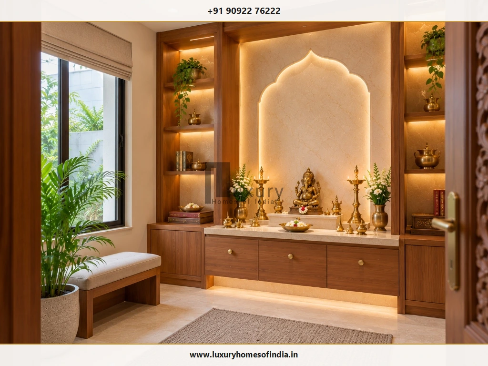
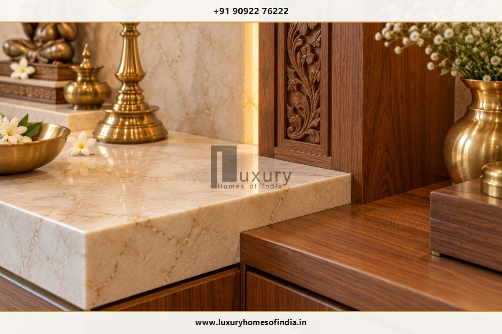
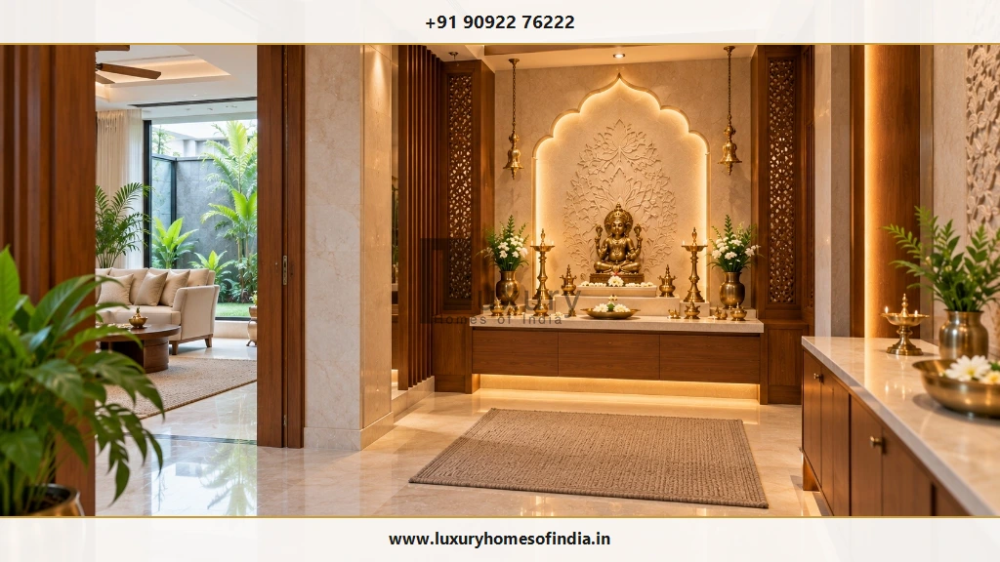
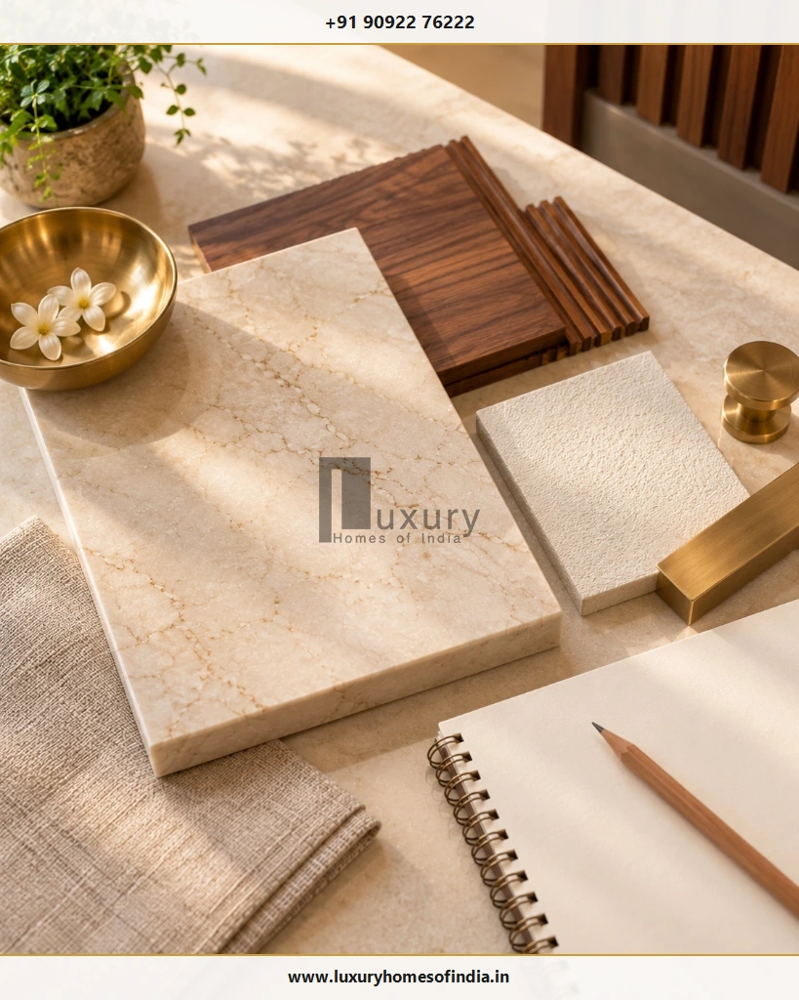

Executive Summary: Working with Pooja Room Designers in Chennai
Choosing pooja room designers in Chennai involves far more than picking an ornate mandir catalog or an elaborate backlit panel. A truly serene, functional prayer space harmonizes family devotional customs, architectural floor layouts, premium materials, lighting layers, concealed storage, smoke ventilation, and everyday ergonomics.
Whether planning a compact apartment mandir, a traditional carved South Indian teak shrine, or a dedicated pooja pavilion in an independent luxury villa, coordinating the design during early architectural design and interior execution ensures structural dead loads, electrical conduit routing, and Vastu orientations are resolved before fabrication begins—preventing costly site re-work.
Choosing pooja room designers in Chennai involves more than selecting an attractive mandir or an elaborate backdrop. A well-planned prayer space brings together the family's traditions, the home's architectural layout, material choices, lighting, storage, ventilation and everyday usability. Whether you are planning a compact apartment mandir, a traditional wooden temple or a dedicated prayer room in a luxury villa, the design should work as part of the home rather than as an isolated decorative feature.
For homeowners planning a new residence, the most important decisions often begin before fabrication or interior finishing. The altar location, available wall space, electrical provisions, material weight and circulation around the room all influence the final result. Coordinating these decisions with architectural design and interior planning can reduce avoidable changes later.
Luxury Homes of India (LHI) works across residential design and construction, including architectural planning, turnkey villa construction and interior execution. Homeowners considering a pooja room within a wider residential project can explore how this space may be coordinated with the overall design, subject to the confirmed project scope.

What Makes a Well-Planned Luxury Pooja Room?
A luxury pooja room is not defined by the amount of ornamentation it contains. Its success depends on proportion, craftsmanship, ease of use and how naturally it fits into the home.

Consider five essential design decisions when collaborating with your design team:
1. Ritual Requirements
Identify the specific idols, framed pictures, deepams, thalis, offerings and sacred accessories the family uses regularly. Design altar depths and heights around these items.
2. Spatial Planning
Allow practical access to the altar, comfortable space for seated or standing worship, and clear door swing clearance that does not block corridor pathways.
3. Material Selection
Match stone and timber finishes to your aesthetic goals, cleaning regimens, mechanical anchor capacities, and safe distance from burning wicks.
4. Lighting & Services
Coordinate 2700K warm lighting, switches, accessible driver boxes, and silent exhaust ventilation before joinery and stone slabs are finalized.
5. Architectural Integration
Relate the prayer room's ceiling coves, doorway mouldings, timber stains and colour palette directly to the adjoining interior architecture.
The design process should always begin with the family's actual worship requirements and the certified floor plan—not simply a decorative reference photograph.
Luxury Pooja Room Design Ideas for Chennai Homes
Chennai's architectural landscape combines rich South Indian Dravidian heritage with sleek contemporary residences along ECR, OMR, Boat Club, and Poes Garden. Here are the five most prevalent design archetypes:
1. Traditional South Indian Wooden Mandir
A traditional wooden mandir can incorporate intricate hand-carved pillars, ornamental prabhavali arches, a raised tiered altar and antique brass bells. The visual language works particularly well when the home already features seasoned Chettinad woodwork or warm timber flooring.
The important planning consideration is the relationship between the carving depth, altar dimensions and available room space. Excessively deep detailing can make a compact room feel crowded, while an appropriately proportioned design preserves visual richness without obstructing daily cleaning.
2. Marble and Natural-Stone Prayer Room
Marble and other natural stones create a serene, luminous backdrop for a dedicated prayer space. Colour tones, organic veining, edge bullnosing and joint placement should be considered together rather than selected as isolated decorative choices.

Before installation, verify the stone's dead load, supporting brickwork or RCC frame, substrate anchoring, and stain-sealing against oil and turmeric. Natural materials vary in tone and grain, so always approve physical slab samples and clarify the specified finish before procurement.
3. Contemporary Minimalist Mandir
A contemporary mandir combines clean geometric lines, a restrained neutral palette, integrated push-to-open storage and carefully positioned indirect lighting. Fluted wood, honed stone and textured panels provide visual warmth without relying on heavy ornamentation.
This approach suits modern apartments and villas. Concealed lighting channels should be planned with accessible driver hatches, and the design must remain practical when brass lamps and offerings are in active use.
4. Compact Pooja Unit for an Apartment
A wall-mounted floating cabinet, recessed drywall niche or dedicated prayer alcove can establish a defined worship area without requiring a separate room.
The design must account for wall construction, the weight of the altar and heavy bronze deities, accessible drawer storage, door or shutter swing clearances, and nearby electrical points. A decorative CNC jaali screen can provide visual separation from a living area, provided it does not obstruct family circulation or compromise safe lamp placement.
5. Dedicated Pooja Room in a Luxury Villa
A villa permits an independent prayer room with a custom altar, coordinated wall claddings, built-in storage credenzas, and a more generous approach to natural daylight and family circulation.
The room should be planned alongside the wider residential layout. Its relationship to adjacent hallways, doorways, MEP services and courtyard views needs to be resolved before finishes are ordered. A cohesive result comes from thorough coordination, not from adding expensive materials at the final stage.
Pooja Room Planning: What Should Be Decided Before Construction?
The most useful time to plan a pooja room is while the home's layout and interior requirements are still being developed. Changes are far easier and more economical to coordinate on architectural drawings than after structural walls, tiles and joinery are completed on site.

Confirm the Altar Location and Dimensions
Record the exact room or niche dimensions and determine the altar's footprint. Consider the height of the platform (typically 15 to 18 inches for seated worship, or 30 to 34 inches for standing prayer), the position of primary idols, space for daily offerings, and movement of family members.
For a wall-mounted installation, confirm wall masonry type, mechanical fixing anchors, and structural load capacities with your civil engineer.
Coordinate Electrical and Lighting Requirements
Identify required lighting circuits, dimmer switches and power sockets before cabinetry fabrication. Soft general lighting supports movement and cleaning, while carefully positioned warm accent lighting highlights the sacred altar without causing eye glare for seated worshippers.
Keep lighting fixtures safely separated from open flames and oil fumes, and ensure LED drivers remain easily accessible for routine maintenance.
Select Materials with Maintenance in Mind
Compare physical material samples for aesthetic harmony, ease of cleaning, long-term durability and resistance to oil and soot. Consider how regular handling, camphor flames, and flower moisture affect the specified finishes.
Heavy stone slabs, custom joinery and decorative stone screens must be coordinated with their underlying supporting construction. Material selection alone cannot guarantee structural suitability.
Plan Storage Around Actual Rituals
Decide where prayer books, brass trays, deepams, incense, camphor and festival accessories will reside. Daily-use items should be accessible in shallow pull-out drawers beneath the altar counter without cluttering the sacred surface.
Consider Ventilation and Fire Safety
Burning oil lamps and incense produce smoke and soot. Assess natural airflow openings or integrate a quiet ceiling exhaust fan. Keep open flames away from fabrics, curtains, wooden mouldings and electrical points. Where cabinetry is enclosed, verify safe vertical flame clearances before lighting lamps.
Pooja Room Vastu Planning in Chennai
Many Chennai homeowners prefer to incorporate Vastu Shastra principles into their prayer room planning. In traditional guidance, the north-east sector (Ishanya Kona) is commonly recommended, while east and north directions are also considered practical alternatives.
A practical architectural review begins with the verified site survey and floor plan. The position of the altar, worshipper's orientation (devotees facing east or north), door swing direction, adjacent services and family rituals must be reviewed together.
Architectural Vastu Balance
Vastu interpretations can vary among practitioners. These preferences should be evaluated early and integrated smoothly into the architectural design rather than enforced as rigid building restrictions that compromise structural integrity or living comfort.
For a comprehensive, step-by-step exploration of directional rules and idol heights, read our companion guide: Pooja Room Placement as per Vastu: Best Direction, Idol Position and Planning Tips.
Pooja Room Design for Apartments, Independent Houses and Villas
The ideal mandir configuration depends directly on the building typology and available floor area:
| Property Typology | Recommended Mandir Layout | Primary Planning Focus |
|---|---|---|
| Apartments | Wall-mounted floating unit, recessed drywall niche, or screened corner | Verify wall anchoring dead load, protect corridor circulation, and include concealed drawer organizers. |
| Independent Houses | Dedicated compact room or partitioned prayer alcove off the living hall | Balance altar proportions with family seating, ensure cross-ventilation, and coordinate Vastu orientation. |
| Luxury Villas | Full architectural prayer room with courtyard views or custom stone pavilion | Harmonize structural stone slabs, DALI automation lighting scenes, bespoke teakwood joinery, and private garden vistas. |
In every scenario, always review physical site dimensions and certified shop drawings before approving custom joinery or ordering expensive stone slabs.
What Affects Pooja Room Design Costs in Chennai?
There is no single generic price for a pooja room. The total investment depends on the project scope, material specifications, physical dimensions and craftsmanship requirements:
- Room & Altar Dimensions: Overall built-up footprint and height.
- Material Selection: Imported Italian marble vs. Indian Makrana vs. granite.
- Artisan Craftsmanship: Hand-carved teakwood pillars vs. CNC laser cutting.
- Storage Hardware: Soft-close Blum runners and anti-tarnish velvet linings.
- Lighting & Automation: Concealed high-CRI LED profiles and smart dimmers.
- Substrate & Structural Prep: Steel framing and heavy-duty anchors.
- Ventilation & MEP: Dedicated low-noise ceiling exhaust and power conduits.
- Finishing & Protection: Impregnating stone sealers and fire-retardant clear lacquer.
Always insist on an itemised quotation that clearly specifies materials, brand grades, fabrication details, installation labor, transport, and site measurement responsibilities. Comparing proposals against identical drawings ensures transparent cost control.
How Residential Design and Construction Planning Can Help
A prayer room is one integral component of a larger residential ecosystem. Coordinating it with architectural planning and interior execution resolves critical decisions before they turn into expensive on-site alterations.
For example, the mandir's orientation can be confirmed directly during floor plan drafting, while lighting channels and electrical conduit drops can be cast into the RCC slab or concealed in drywall framing before plastering. Stone finishes, wall dead-load support, and timber joinery can then be engineered as cohesive parts of the residence.
Luxury Homes of India provides comprehensive residential services, including architectural design and planning, turnkey villa construction, and luxury interior execution. Homeowners planning a new residence or substantial renovation can discuss their spatial goals with our senior engineering and architectural team.
Pooja Room Design Checklist
Before approving shop drawings or releasing carpentry deposits, review this 12-point decision guide with your design team:

Frequently Asked Questions
Discuss Your Residential Design Requirements with LHI
A thoughtfully planned prayer room should reflect your family's traditions while complementing the architecture and interiors of your home. Early coordination of space, materials, lighting, storage and installation requirements helps establish a clear design before work proceeds.
Luxury Homes of India provides residential design and construction services, including architectural planning, turnkey villa construction and interior execution. If you are planning a new home, villa or wider residential project, contact LHI to discuss your requirements and confirm the services applicable to your project.
Collaborate with Chennai's Premier Villa Builders & Designers
Explore how architectural floor planning and bespoke interior execution unite to create an auspicious, luxurious home temple for your family.